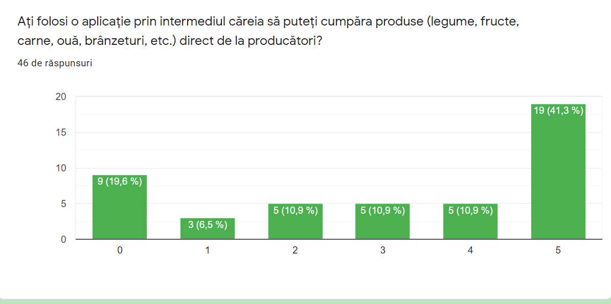

Dificultatea procesului de gestiune a stocului de produse, in cadrul restaurantelor, precum si waste management.
Soluția noastra
Implementarea unei aplicatii care sa ii ofere utilizatorului posibilitatea de a vedea ce retete poate gati,
pe baza alimentelor pe care le are in frigider si a preferintelor pe care le seteaza, fara a fi conditionat
de vizualizarea acestora - aplicatia va mentine un stoc al produselor (Aici e un pic complicat acest aspect,
pentru ca stocul este conditionat de utilizator, daca adauga si sterge un element dupa ce il consuma. Am
putea ca in momentul in care se alege prepararea unei retete, utilizatorul sa treaca prin mai multi pasi -
etapele de gatit, timp, etc. - iar la final, cand selecteaza ceva de tipul ‘Reteta gatita cu succes’ sa se
scada din stoc cantitatea de ingrediente folosita. Dar mai apare si situatia in care se consuma din alimente
fara a pregati o reteta).
Pentru partea de restaurante - utilizatorii vor putea sa isi gestioneze stocul de alimente si sa aibe o viziune clara asupra
ingredientelor disponibile (poate fi eliminata utilizarea multor dosare pentru a pastra evidenta produselor).
Segment de clienți
Primul grup tinta este reprezentat de persoanele care obisnuiesc sa gateasca, cele care vor sa pregateasca
ceva rapid, fara a necesita cumparaturi suplimentare, precum si cele care vor sa nu risipeasca mancarea,
folosind alimentele disponibile, pentru a nu ajunge in situatia de a fi aruncate.
Al doilea grup tinta poate fi constituit de restaurante, in cadrul carora se lucreaza cu mai multi furnizori,
care asigura aprovizionarea;
Competitie
+5 mil. de descarcari + sectiune pentru pantry, shopping;
Ai posibilitatea sa introduci la ce esti alergic, daca tii diete.
Se folosesc de inteligenta artificiala, fac o poza la ce au disponibil si le apar retetele pe care le poti gatit.
Arata foarte bine aplicatia si pe baza ingredientelor pe care le selectezi iti prezinta retete;
Ai posibilitatea sa iti creezi o planificare; Ofera si posibilitatea de a face cumparaturi;
Avantajul nostru față de concurență
Pe partea de mobile, avantajul ar fi ca incercam sa oferim si un sistem de gestiune al produselor pentru restaurante,
pentru ca partea de pantry si retete mai este implementata.
Moodificare automat stocul alimentelor in functie de retetele pe care alegi sa le gatesti.
B2B + B2C
Valori cheie
B2C: Cate persoane vor descarca aplicatia?
B2B: Cati clienti vor folosi aplicatia?
Cate restaurante vor cumpara app?
Structura costurilor
Dezvoltare & Salarii0%
Marketing si Atragere de clientii 50%
Servicii adiacente de software 50%
Hardware 0%
Fluxuri de venituri
Subscripție (abonament lunar) sau plata o data cu costuri de mentenanta
Numarul de descarcari
Schimbare idee proiect
M2 - Validation 1
Identificarea problemei
Ideea proiectului a pornit de la incercarea de a identifica probleme cu care oamenii se confrunta in prezent. Una dintre problemele regasite vizeaza orientarea persoanelor pe comertul online, iar producatorii locali si distribuitorii din piete au de suferit.
Soluția propusă
O platforma online pentru centralizarea producatorilor locali care sa le ofere posibilitatea de a isi vinde produsele fara intermediari si fara a mai merge pana la piata si a mai plati chiria pe locul din piata.
De asemenea, clientii pot interactiona direct cu producatorii, lasand comentarii sau adresand intrebari.
Identificarea clienților - Descriere
Am cerut pareri de la:
- producatorii din piete si cei identificati pe retelele de socializare
- potentiali cumparatori din mediul online
Pentru ambele categorii am creat cate un set de intrebari care sa atinga punctele esentiale din validarea produsului
Identificarea clienților - Detaliere
Grupuri tinta : clientii nostri sunt producatorii locali de diverse produse si oamenii ce doresc sa cumpere produse naturale. Informatiile au fost colectate separat pentru fiecare categorie.
Pentru producatori am creat un set de intrebari pe care le-am pus face-to-face in piata, pe la tarabe sau online pe chat (facebook) dupa o mica prezentare a proiectului.
Intrebarile puse:
1. În momentul de față, producătorii direcți din România își pot vine produsele cu ușurință în piețe, supermarket-uri, etc, sau în general produsele ajung la intermediari?
2. În calitate de producător ați folosi o aplicație prin intermediul căreia să vă vindeți produsele?
3. Ați fi dispus să oferiți informații suplimentare clienților despre produsele oferite?
4. Cum ați vedea sistemul de plată pentru utilizarea unei astfel de aplicații? (procent pe fiecare tranzacție sau abonament lunar)
5. Clienții ar avea acces la o listă cu producătorii din proximitatea lor și ar putea veni singuri să își ridice comanda. Considerați util acest aspect?
6. Aplicația va avea integrat un sistem de recenzii, în care clienții vor putea oferi comentarii despre produsele achiziționate. Ce părere aveți despre acest lucru?
Pentru a interoga al doilea grup tinta, reprezentat de cumparatori, am creat un google form pe care l-am distribuit persoanelor cunoscute, pe grupurile de pe retelele de socializare si prin email.
Structura formularului poate fi vizualizata accesand urmatorul link: Chestionar cumparatori
Chestionarul a fost completat de un numar de 46 de persoane, iar rezultatele obtinute sunt prezentate in urmatoarele imagini:
Identificarea categoriei de varsta si a genului
Stabilirea obiceiurilor actuale de a realiza cumparaturile
Disponibilitatea de a utiliza a aplicatie de acest tip

Categoriile de produse ce ar fi achizitionate prin intermediul aplicatiei
De la toti producatorii cu care am luat legatura am primit feedback pozitiv. Acestia considera ca i-ar avantaja utilizarea aplicatiei si ca le-ar scuti din timp.
Cumparatorii au pareri impartite, dar majoritar ar dori o astfel de aplicatie. 97.8% nu au mai folosit o aplicatie similara pana acum. Am obtinut o statistica legat de preferinta locului de facut cumparaturi.
Rezultate obținute în urma validării
Am descoperit ca producatorii sunt incantati de o asemenea aplicatie si si-ar dori sa o foloseasca.
Am identificat ca majoritatea utilizatorilor sa fie mai tineri si orientati spre tehnologie.
Am primit sugestii de ce functionalitati se doresc de la aplicatie.
Am identificat posibile metode diferite de monetizare in functie de gradul de dezvoltare a aplicatiei.
Ready for 'Costumer Validation'?
Da, deoarece feedback-ul primit din partea producatorilor a fost unul pozitiv.
Vom extinde partea de “Customer Validation” pe un numar cat mai extins de categorii de produse, tinand cont de dorinta consumatorulor de a avea acces la o varietate cat mai extinsa de produse.
De asemenea, vom incerca sa aflam si parerea consumatorilor din categoriile de varsta 30-50, respectiv 50+ ani.
M3 - Wireframe and Landing Page
Wireframe
Am folosit Balsamiq pentru a schita cum dorim sa arate prima pagina si navigarea prin aplicatie -> ProBio Wireframes
Prima pagina, de prezentare, cu descrierea platformei si poze/anunturi cu producatori si produsele acestora. Cautarea de produse si/sau producatori ar trebui sa fie posibila fara cont, dar daca se doreste adaugarea in cos a produselor si cupararea este necesara crearea unui cont. La fel si in cazul in care un producator doreste sa publice anunturi. Butonul de login te duce la o pagina in care esti intrebat ce tip de cont doresti: producator sau cumparator. Atunci cand se face o cautare, rezultatele primite pot fi afisate pe harta.
Landing Page
Landing page-ul va fi prima pagina de pe platforma, cea de prezentare. Cum am specificat si mai sus, aceasta va avea descriere si anunturi. De aici te poti loga sau face cautari prin produse.
Landing page-ul poate fi vizualizat la urmatorul link:
ProBio Landing Page
M4 - UX
Interviuri
Interviurile au fost susținute telefonic, iar înregistrarea acestora s-a realizat cu acordul persoanelor intervievate și cu păstrarea indentității anonimă.
Consumator: Producător din domeniul viticol Producător de legume, fructe, brânzeturi, carne de porc
User Persona
Grupurile țintă sunt reprezentate de producători și de consumatori. Am ales să realizăm câte un user persona pentru fiecare grup, deoarece obiectivele și așteptările diferă în funcție de entitate. In continuare puteți observa cele două profiluri pe care le-am realizat:
Producător
Consumator
User Stories
User Flows
Update of wireframes
M5 TBA
TBA
TBA
M6 - Market Research
In cadrul Milestone-ului 6 am incercat sa realizam procesul de market research.
Pentru a putea contura o imagine de ansamblu asupra pietei tinta, am realizat urmatorii pasi prezentati in descrierea milestone-ului:
1. Determinarea dimensiunii target market-ului
2. Numarul aproximativ de competitori in cadrul target market-ului


 De la toti producatorii cu care am luat legatura am primit feedback pozitiv. Acestia considera ca i-ar avantaja utilizarea aplicatiei si ca le-ar scuti din timp.
De la toti producatorii cu care am luat legatura am primit feedback pozitiv. Acestia considera ca i-ar avantaja utilizarea aplicatiei si ca le-ar scuti din timp.